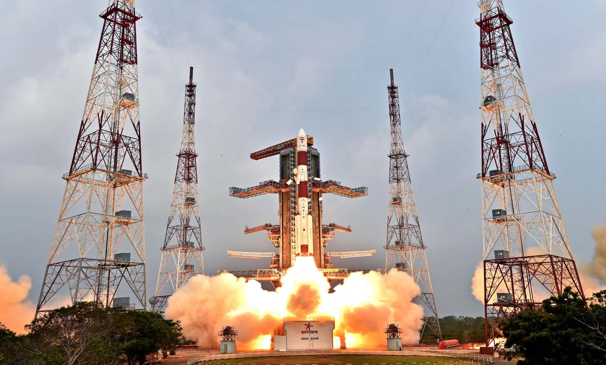
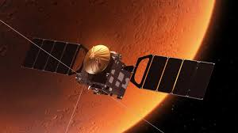
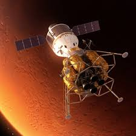
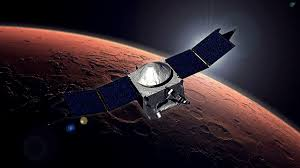
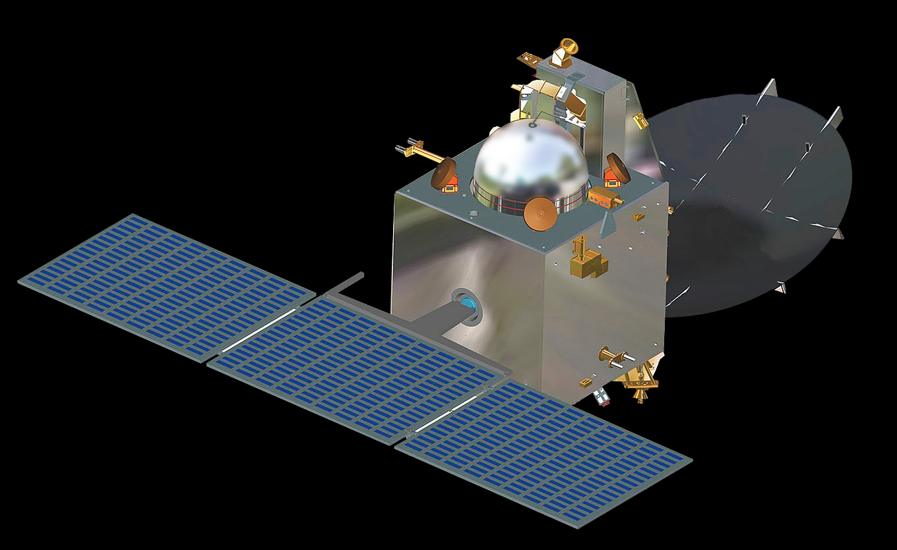
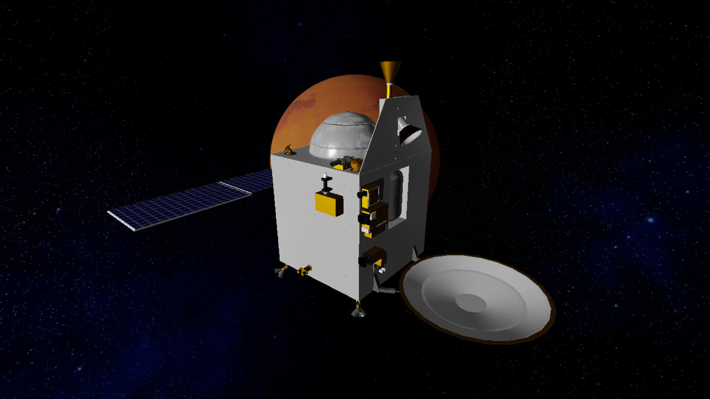

First attempt. First success. India became the first Asian nation — and the fourth space agency in history — to reach Mars orbit. Built in 15 months. Cost less than the film Gravity. This is how India does space.
Watch: Mars Orbiter MissionThe Mars Orbiter Mission — Mangalyaan (Sanskrit: mangala = Mars, yāna = vehicle) — was announced in August 2012 and launched just 15 months later on November 5, 2013. When it entered Mars orbit on September 24, 2014, India joined an elite club of three: USSR, USA, and ESA. No other Asian nation had done it. No agency had succeeded on its first attempt — until India.
The mission was designed as a technology demonstrator — proving that ISRO could navigate interplanetary distances, execute complex orbital manoeuvres, and operate a spacecraft in deep space. It succeeded on every count and then some.
The total cost was ₹450 crore — less than the Hollywood film Gravity ($100M), less than NASA's Maven mission ($671M), and a number that shocked the world into paying attention to India's space programme.
Mangalyaan carried five science instruments designed to study Mars's surface, morphology, atmosphere, and exosphere. The spacecraft used ISRO's I-1K bus — a heritage platform adapted for deep space with significant upgrades for autonomous fault detection and recovery.
Mars Colour Camera (MCC) — took hundreds of images of Mars's surface and its moons Phobos and Deimos. Produced some of the most stunning Mars imagery ever captured.
Thermal Infrared Imaging Spectrometer (TIS) — measured surface temperature and thermal emission to map mineralogy.
Methane Sensor for Mars (MSM) — searched for methane in the Martian atmosphere, which would indicate possible biological or geological activity.
Mars Exospheric Neutral Composition Analyser (MENCA) — studied the upper atmosphere and exosphere composition.
Lyman Alpha Photometer (LAP) — measured deuterium/hydrogen ratio to understand Mars's water loss history.
How Mangalyaan compares to other Mars missions — and why the world was stunned.
Every command ISRO sent to Mangalyaan across 300 million kilometres of space — and every image and dataset it returned — passed through the Indian Deep Space Network (IDSN) at Byalalu, Karnataka. The 32-metre dish antenna at IDSN tracked Mangalyaan continuously, maintaining communication across a distance that light itself takes 20 minutes to cross. Without IDSN, there is no Mangalyaan mission.
Swipe or click arrows to browse. Click any photo to zoom.




.jpg)
